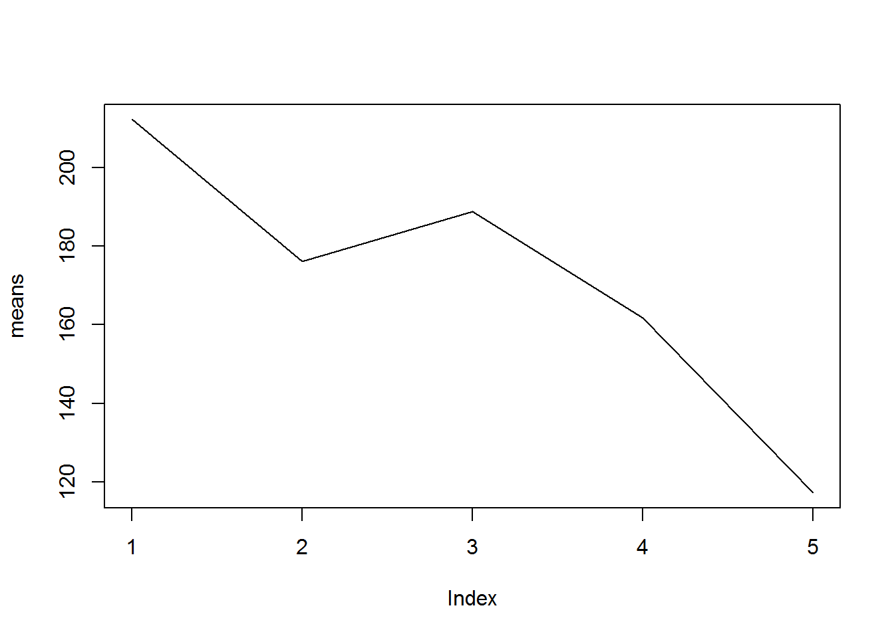

Chapter 9 Where and How to Get Help
Goal
The main goal of this chapter is to equip you with code problem solving skills.
What we shall cover
By the end of this chapter you should:
- Know how to define coding problems
- Where to get help and
- How to get help
Prerequisite
To appreciate this chapter, you must be conversant with:
- Making function calls
- Difference between errors and warnings
9.1 Introduction
Coding problems are inevitable in all analytical programs; for R, these problems are mostly felt at the beginning as one starts to interact with the program, and since R is open source, an additional challenge pops up; where to find help. It is upon this premise that this chapter is based on.
We shall begin by understanding how to identify and define problems, then proceed to learn how and where to get help.
9.2 Problem Identification
Half of the solution to any problem is understanding the problem itself. In general, there are two type of problems we are bound to face as we begin to code, one is where we do not know how to start or the functions to call, and two, we know the function but it produces either an error, a warning or unexpected results.
In the first case, coding problems can be defined by the tasks that need to be done. For example, how can we get mode or most frequently occurring number in a vector? Function “mode” does a totally different thing, it returns an object’s type. How about trying to determine whether a given object is in another, what function do we use? In both of these problems we do not know where to begin or functions that can achieve our goals. Hence we can define our problems as function to get most frequently occuring value and function to get matches.
For the second case there could be varied reasons for the problem. For example, for an error, the problem can be defined by a missing object while for a warning, problem is with input/object given. Unexpected results are often hard to define, they could be from a function call, platform specification or a number of other reasons.
For each one of these problems, challenge is usually identifying exact cause.
Since we can define problems emanating from first case, let’s look at some of the problems that pertain to evaluation of a function call, that is; errors, warnings and unexpected results. In each one of these problems we want to pin point exact problem like missing object or unexpected input. We will use this information to guide us through the problem solving process in the next section. Bear in mind problems presented here are some of the basic problems that skilled R users might deem as non-problematic but can be dauting to R newbies.
9.2.1 Errors
Errors result from missing objects, which means problem definition should involve identification of missing object. Error messages give information on cause of error or problem, but this is usually a problem in itself.
So here we will look at two basic problems that new R users face, mainly those coming from a non-programming background. In these two cases we will try and understand source of problem or error message.
First Problem
Consider a situation where we have a data set and from it we want to extract rows that meet a certain condition. When we try to extract, we receive an error; “undefined columns selected”.
# Data
n = 10
datDF <- data.frame(id = 1:n, status = sample(c("Exposed", "Unexposed"), n, replace = TRUE))
datDF
## id status
## 1 1 Exposed
## 2 2 Exposed
## 3 3 Exposed
## 4 4 Exposed
## 5 5 Exposed
## 6 6 Unexposed
## 7 7 Exposed
## 8 8 Unexposed
## 9 9 Unexposed
## 10 10 Unexposed# Extracting data for exposed
datDF[datDF$status == "Exposed"]
## Error in `[.data.frame` (data, dat$status == "Exposed") :
## undefined columns selectedIn this problem the missing object is columns to be returned. That is is clear, but what might be puzzling is that we have used “$” to indicate column selected, or at least that is what we think we have done.
But let us take a closer look; when we print the expression within extraction operators “[]” we get a logical vector where TRUE means “exposed” and FALSE means “unexposed”.
datDF$status == "Exposed"
## [1] TRUE TRUE TRUE TRUE TRUE FALSE TRUE FALSE FALSE FALSE
class(datDF$status == "Exposed"); dim(datDF$status == "Exposed")
## [1] "logical"
## NULLTherefore our input to extraction operator is a one dimensional logical vector that R has interpreted as row indices, however, R expects two objects, “i” and “j” denoting row and columns indices. Therefore R still expects column indices indicating columns to be returned with given rows. “$” sign was used to specify column to apply condition but not what should be returned.
With that we have identified our problem; or more amply, defined what R calls missing column. This might seem rather obvious for programmers and advanced R users but quite a steep for new R users. We discuss how to address this problem in the next section.
Second Problem
One other puzzling problem is “Error in plot.new(): figure margins too large”. This problem often arises when making multiple plots on one window.
What is puzzling is “plot.new()”, where does it come from given call is made to “plot()” and not “plot.new()”.
To put it into context, let’s try and make seven scatter plots in one plotting window for comparison. We begin by making a call par() passing 3 rows and 3 columns to “mfrow” thereby getting a 3 by 3 layout.
mfrow <- par("mfrow")
par(mfrow = c(3, 3))When we make first call to plot we get an error.
plot(x = state.x77[, "Population"], y = state.x77[,"Life Exp"])
## Error in plot.new(): figure margins too largeThe error message we have received clearly states the problem as large figure margins, however, we did not call “plot.new” hence did not pass any figure margins. In this case our problem definition needs to change from figure margins to discovering function plot.new and how it affects plot().
9.2.2 Warning Messages
In general, warnings are potential problems rather than full fledged problems. Impact of these potential problems can determine whether to accept R’s output or recall the function with different inputs. Recalling a function would mean the first call had a problem that needed to be addressed.
Let us look at an example where warning has little impact (we expected R’s action) and therefore output generated is acceptable.
x <- 1:5
y <- 0:10
# X is shorter than Y hence it will be recycled to length of Y
length(x); length(y)
## [1] 5
## [1] 11
v <- x + y
v
## [1] 1 3 5 7 9 6 8 10 12 14 11An example of warnings as actual problems is where we want to rename a level of a factor variable. For some reason it inputs Na’s in identified indices matching a given level.
# Selecting a certain level and renaming it
iris$Species[iris$Species == "setosa"] <- "Setosa"
# NA produced with a warning message
iris$Species[iris$Species]
## [1] <NA> <NA> <NA> <NA> <NA> <NA> <NA> <NA> <NA> <NA> <NA> <NA> <NA> <NA>
## [15] <NA> <NA> <NA> <NA> <NA> <NA> <NA> <NA> <NA> <NA> <NA> <NA> <NA> <NA>
## [29] <NA> <NA> <NA> <NA> <NA> <NA> <NA> <NA> <NA> <NA> <NA> <NA> <NA> <NA>
## [43] <NA> <NA> <NA> <NA> <NA> <NA> <NA> <NA> <NA> <NA> <NA> <NA> <NA> <NA>
## [57] <NA> <NA> <NA> <NA> <NA> <NA> <NA> <NA> <NA> <NA> <NA> <NA> <NA> <NA>
## [71] <NA> <NA> <NA> <NA> <NA> <NA> <NA> <NA> <NA> <NA> <NA> <NA> <NA> <NA>
## [85] <NA> <NA> <NA> <NA> <NA> <NA> <NA> <NA> <NA> <NA> <NA> <NA> <NA> <NA>
## [99] <NA> <NA> <NA> <NA> <NA> <NA> <NA> <NA> <NA> <NA> <NA> <NA> <NA> <NA>
## [113] <NA> <NA> <NA> <NA> <NA> <NA> <NA> <NA> <NA> <NA> <NA> <NA> <NA> <NA>
## [127] <NA> <NA> <NA> <NA> <NA> <NA> <NA> <NA> <NA> <NA> <NA> <NA> <NA> <NA>
## [141] <NA> <NA> <NA> <NA> <NA> <NA> <NA> <NA> <NA> <NA>
## Levels: setosa versicolor virginicaWarning message produced defines problem as invalid level. Question here is how can we tell R we are renaming or reassigning a level, we discuss this in subsequent section.
9.2.3 Unexpected Output
As noted, unexpected output occurs when R produces results we were not anticipating. Here we will look at three possible sources of problems.
First Problem
Suppose we want to print “0011” which could be a questionnaire identifier or a binary code.
0011
## [1] 11As you can see when we print on the console, our leading zero’s are dropped and what we are presented with are the two significant digits 11. This is not exactly what we wanted, question therefore is how can you ensure this does not happen and how can we define this problem?
We can define this as a formatting problem given that leading zeros are dropped, hence we need to figure out how to format these values such that leading zeros are preserved.
Second Problem
As a second example, suppose we had the following vector.
input <- c(7/17/2016, 6/17/2016, 5/17/2016, 4/17/2016, 3/17/2017, 2/17/2016, 1/17/2016)
class(input)
## [1] "numeric"We want to convert it into a date object and therefore used “as.Date” function for numeric vectors.
as.Date(input, origin = "1970-01-01" , format = "%m/%d/%Y")
## [1] NA NA NA NA NA NA NAOutput generated is a vector with NA or missing dates, not quite what we expected. Question is what went wrong and how can we define this problem.
To define this problem, we need to look at what we passed to “as.Date”. First let us print vector input with our dates.
# Values passed to as.Date
# c(7/17/2016, 6/17/2016, 5/17/2016, 4/17/2016, 3/17/2017, 2/17/2016, 1/17/2016)
# How R interpreted it
input
## [1] 2.04248366e-04 1.75070028e-04 1.45891690e-04 1.16713352e-04
## [5] 8.74916154e-05 5.83566760e-05 2.91783380e-05When R saw “/”, it immediately evaluated the values resulting in a numerical vector of type “double”. When we passed these values to “as.Date”, as.Date had no problem with it as it was a numeric vector for which it had a method (as.Date.numeric). And since the other arguments “origin” and “format” were rightfully included in the call, no error or warning is produced. But given values of input (between 0 and 1), addition to specified origin results in insignificant change, hence R produced NA.
as.Date("1970-01-01") + input
## [1] "1970-01-01" "1970-01-01" "1970-01-01" "1970-01-01" "1970-01-01"
## [6] "1970-01-01" "1970-01-01"Our problem is therefore an input problem and need to figure our how to pass values that “as.Date” will recognize and convert to a date object.
Third Problem
As a third example, consider a situation where we have a factor vector with five dates levels. Our interest is to make a plot with means of each date level on the y-axis and their level on the x-axis. Something along these lines.
# Data
dat <- seq.Date(as.Date("2016-01-01"), to = as.Date("2016-07-15"), length.out = 5)
dat <- sort(as.factor(sample(dat, 50, replace = TRUE)))
cases <- sample.int(n = 300, length(dat))
means <- tapply(cases, dat, mean)
# Plot
plot(means, type = "l")
We have managed to make a plot without an error or warning as values passed were okay. However, we expected labels for x-axis to be date levels rather than indices, question is how were levels changed to indices and how do we solve this problem? But before solving it, we need to define the problem.
This is a problem of axis labeling, we need to get guidance on making custom axis/labels.
With actual problem identified, we can now look for way to solve it.
9.3 Solving (defined) coding problems
In this section we will begin by solving problems posed in the previous section then proceed to discuss in some detail how and where to seek help for problems we are unable to solve.
9.3.1 Problems where functions are unknown
When functions to be called are unknown, it is best to first ensure we have a good foundation in R. This means making sure we have undertaken a few learning sessions as well as a few practice sessions. With this foundation, as a new R user it is important to start reading “An Introduction to R” manual. This manual is rather hard to understand without some basic knowledge and skills.
At the beginning of our previous section we posed two problems where we did not know functions to call. The first of these was how to get most frequently occurring value in a vector and the other involved getting a function to get matches. To solve these problems, we must begin by reading R’s introduction manual accessible through a call to “help.start()”. We can also search through R’s internal help facilities for certain key words using function “apropos” and/or “help.search”.
Given our first case, skimming through the manual does not yield to a solution; there is no mention of how to get statistical mode, hence we need look outside R. As for the second case, typing “?match” instantly opens help documentation for function “match”. Reading through it we realize we have found our solution.
num1 <- 1:10
num2 <- 5:15
alph1 <- LETTERS[1:10]
alph2 <- LETTERS[5:15]
# Matching values in first vector to second vector
match(num1, num2, nomatch = 0L)
## [1] 0 0 0 0 1 2 3 4 5 6
match(alph1, alph2, nomatch = 0L)
## [1] 0 0 0 0 1 2 3 4 5 6
# Returning only matches (values in both vectors)
num2[match(num1, num2, nomatch = 0L) > 0L]
## [1] 9 10 11 12 13 14
alph2[match(alph1, alph2, nomatch = 0L) > 0L]
## [1] "I" "J" "K" "L" "M" "N"
# Alternatively "%in%" can be used (Literary asking "is this in that")
num1 %in% num2; num2[num1 %in% num2]
## [1] FALSE FALSE FALSE FALSE TRUE TRUE TRUE TRUE TRUE TRUE
## [1] 9 10 11 12 13 14
alph1 %in% alph2; alph1[alph1 %in% alph2]
## [1] FALSE FALSE FALSE FALSE TRUE TRUE TRUE TRUE TRUE TRUE
## [1] "E" "F" "G" "H" "I" "J"
# A simpler way to extract matches (using set theory in math)
intersect(num1, num2)
## [1] 5 6 7 8 9 10
intersect(alph1, alph2)
## [1] "E" "F" "G" "H" "I" "J"9.3.2 Problems where functions are known
For problems where we know functions to call but have difficulty getting what we want, the first place for us to search for solutions is R’s inbuilt help documentations. These documentations are accessed with function “help” or starting query with a question mark.
# Pulling up help documentation for function mean
help("mean")
?meanWe can also get a good insight to these functions by reading R’s introduction manual. In addition, for add-on/contributed functions we can read the package manual and vignettes. Vignettes are detailed documents about a package. A list of all vignettes can be sourced by calling function “vignette” without passing any argument.
For both base R and add-on/contributed functions, we can ask R to give us a function’s example by calling “example” or give us a demonstration by calling “demo”.
example("mean")
# List of all demos in base R
demo()Now let us try and solve our three type of problems; errors, warnings and unexpected results.
9.3.2.1 Errors
We defined our first problem as a problem of missing column. We can read up on how to add columns to a data frame extractor by pulling up it’s help documentation or asking R to show us sum examples.
?data.frame
?"["
example("data.frame")
example("[")
help("[.data.frame")From documentation on data frame extractor function, we now know we can return all columns by adding a comma after selected rows, this would solve our first problem.
datDF[datDF$status == "Exposed", ]
## id status
## 1 1 Exposed
## 2 2 Exposed
## 3 3 Exposed
## 4 4 Exposed
## 5 5 Exposed
## 7 7 ExposedOur second problem requires us to start by knowing what “plot.new()” is and how it affects “plot()”. Hence we need to begin by pulling up its help documentation ?plot.new.
From its help documentation, it is clear that plot.new is a low level function called by all high-level plotting functions. Its main objective is to create or start a new plotting frame or window. Try calling this function without passing any values, a plotting window should be opened.
It is clear what plot.new is and how it comes about and can therefore start to understand what figure margins means. When we changed graphical parameter “mfrow” we essentially added multiple figures to this new plotting window. Each of these figures is padded with some margin as documented by parameter “mar” (par(“mar”)). So the error is simply telling us that this margins are taking a lot of space thereby making it impossible to plot. We can therefore solve this problem by manipulating figure and outer text margin.
# Documenting original figure layout and margin
original <- par("mfrow", "mar", "oma")
# Reducing figure margins
par(mfrow = c(3, 3), mar = c(1.3, rep(0, 3)), oma = c(rep(2.5, 4)))
# Making first plot
plot(x = state.x77[, "Population"], y = state.x77[,"Life Exp"], xlab = "", ylab = "", xaxt = "n", las = 1)
axis(1, labels = FALSE)
text(x = axTicks(1), y = par("usr")[3] - 0.3, labels = axTicks(1), xpd = NA)
# Making second plot
plot(x = state.x77[, "Income"], y = state.x77[, "Life Exp"], xlab = "", ylab = "", axes = FALSE, frame.plot = TRUE)
axis(3, labels = FALSE)
text(axTicks(3), par("usr")[4] + 0.3, axTicks(3), xpd = NA)
# Making third plot
plot(x = state.x77[, "Illiteracy"], y = state.x77[, "Life Exp"], xlab = "", ylab = "", axes = FALSE, frame.plot = TRUE)
axis(1, labels = FALSE)
text(axTicks(1), par("usr")[3] - 0.3, axTicks(1), xpd = NA)
# Making fourth plot
plot(x = state.x77[, "Murder"], y = state.x77[, "Life Exp"], xlab = "", ylab = "", axes = FALSE, frame.plot = TRUE)
axis(1, labels = FALSE)
text(axTicks(1), par("usr")[3] - 0.3, axTicks(1), xpd = NA)
# Making fifth plot
plot(x = state.x77[, "HS Grad"], y = state.x77[, "Life Exp"], xlab = "", ylab = "", axes = FALSE, frame.plot = TRUE)
axis(1, labels = FALSE)
text(axTicks(1), par("usr")[3] - 0.3, axTicks(1), xpd = NA)
# Making sixth plot
plot(x = state.x77[, "Frost"], y = state.x77[, "Life Exp"], xlab = "", ylab = "", axes = FALSE, frame.plot = TRUE)
axis(1, labels = FALSE)
text(axTicks(1), par("usr")[3] - 0.3, axTicks(1), xpd = NA)
axis(4, labels = FALSE)
text(par("usr")[2] + 15, axTicks(4), labels = axTicks(4), xpd = NA)
# Making seventh plot
plot(x = state.x77[, "Area"], y = state.x77[, "Life Exp"], xlab = "", ylab = "", xaxt = "n", las = 1)
axis(1, labels = FALSE)
text(axTicks(1), par("usr")[3] - 0.3, axTicks(1), xpd = NA)
# Resetting original parameters
par(mfrow = original$mfrow, mar = original$mar, oma = original$oma)9.3.2.2 Warning
When trying to rename a level in a factor vector, we ended up getting NA’s and from warning message given this was a problem of invalid factor level. We therefore need to look up documentation on reassigning factor levels, but what function should we look up?
Looking closely at warning message we see R has given us function to look up, this is “[<-.factor” a function for extracting and replacing parts of a factor vector.
Reading up on this documentation and specifically second sentence under “details” section, we note that value should be a level in the factor vector being reassigned otherwise NA’s are generated with a warning. Clearly this means we used the wrong function in the first place, hence we need to get the correct function.
As before, our next search should be R’s introduction manual. Under chapter four and specifically 4.1, we note function “levels” used to find levels of a factor. Reading through help documentation of “levels” we see there is a “levels(x) <- value” which is used to set or reset levels. This is definitely the function we should use to reassign levels and therefore we have solved or little problem.
indices <- iris$Species == "setosa"
iris$Species[indices]
## [1] <NA> <NA> <NA> <NA> <NA> <NA> <NA> <NA> <NA> <NA> <NA> <NA> <NA> <NA>
## [15] <NA> <NA> <NA> <NA> <NA> <NA> <NA> <NA> <NA> <NA> <NA> <NA> <NA> <NA>
## [29] <NA> <NA> <NA> <NA> <NA> <NA> <NA> <NA> <NA> <NA> <NA> <NA> <NA> <NA>
## [43] <NA> <NA> <NA> <NA> <NA> <NA> <NA> <NA>
## Levels: setosa versicolor virginica
levels(iris$Species)
## [1] "setosa" "versicolor" "virginica"
levels(iris$Species)[1] <- "Species1"
levels(iris$Species)
## [1] "Species1" "versicolor" "virginica"
iris$Species[indices]
## [1] <NA> <NA> <NA> <NA> <NA> <NA> <NA> <NA> <NA> <NA> <NA> <NA> <NA> <NA>
## [15] <NA> <NA> <NA> <NA> <NA> <NA> <NA> <NA> <NA> <NA> <NA> <NA> <NA> <NA>
## [29] <NA> <NA> <NA> <NA> <NA> <NA> <NA> <NA> <NA> <NA> <NA> <NA> <NA> <NA>
## [43] <NA> <NA> <NA> <NA> <NA> <NA> <NA> <NA>
## Levels: Species1 versicolor virginica9.3.2.3 Unexpected Output
Under this section when defining coding problems we gave an example of integers with leading zeros where we were expecting leading zeros to be printed along side their significant digits. This was however not the case and as they were drop. We concluded by defining the problem as a formatting issue. In that case we will begin by searching formatting documentations.
?format
?formatC
help.search("format")
help.start() # An Introduction to RWhen you read through these documentations, you will note “formatC” is what we want. formatC() mentions another C-style function “sprintf” capable of doing the same thing.
0011
## [1] 11
sprintf("%04i", 0011)
## [1] "0011"
formatC(0011, width = 4, flag = 0)
## [1] "0011"In our second example, we had a problem with passing values as.Date could understand in order for it to produce date objects. This was a simple issue of reading as.Date’s help documentation.
Under “usage” section, you will note methods (or functions) for “character”, “numeric”, “POSIXct”, and “Date” objects. Each of these methods/functions will work differently, for example, for numeric vectors, values are added to origin (first converted to date if need be) and character objects are first formatted to “year-month-day” and then assigned class “date”.
With this knowledge we can create a date vector by making “input” a character vector and with that we solve an otherwise recurring problem.
# Input as a character object
input <- c("7/17/2016", "6/17/2016", "5/17/2016", "4/17/2016", "3/17/2016", "2/17/2016", "1/17/2016")
# Converting character to date object
dateInput <- as.Date(input, format = "%m/%d/%Y")
dateInput
## [1] "2016-07-17" "2016-06-17" "2016-05-17" "2016-04-17" "2016-03-17"
## [6] "2016-02-17" "2016-01-17"
class(dateInput)
## [1] "Date"Note, for character objects, key conversion argument is format (if it is not similar to “1970-01-01”). For numeric values key argument is origin which is used to computed date.
9.4 Where to get help
Based on preceding discussion we now know how to identify and define coding problems. We can also pull up R’s help documentation as well as its introductory manual. We now need to learn other sources of help and expected ways of getting help.
In general there are two sources of help, internal (within R) and external. Each of these has several sources of help. But none of these sources is relevant without some basic R knowledge, hence we will begin this section by noting some learning platforms and key concepts that an R course should contain. We will proceed to discuss R’s internal sources of help and finally conclude with external sources of help. In each source of help, we will go into detail on how to seek help.
9.4.1 Knowledge and Skills
There are two sure ways of mastering a program and thereby reducing amount of coding problems, these are knowledge and skills. The more knowledge and skills one gets, the more they become conversant with the program.
There are quite a number of places to learn R given its increasing popularity; courses are being offered in institutions of learning, offices, workshops and online. Whichever learning platforms is selected, there are some key concepts an introductory session should contain, these are.
- Making function calls (everything that happens in R is a result of a function call)
- R’s data structures (including creating and subsetting them)
- Binary operators and
- Conditional statements
Without these concepts, you are bound to get numerous coding problems for which you might not know how to define. On the same note, knowledge on its own is also not enough, one must practice to get a grip on the concepts.
Some of the online platforms offering introductory to advance sessions in R are data camp, coursera, R bloggers and youtube channels in R. There is also a package called swirl, when installed and loaded, it turns your console to an interactive learning platform, its a great innovation bound to take you through a novice to an intermediate R user in no time. I would highly recommend you start learning with this package.
As a side note and refresher on mathematical concepts, try khan Academy.
9.4.2 R’s Documentations (Internal sources)
R core team has invested a great deal of time and effort in developing a number of valuable documentation. These includes help documentation (for functions), manuals and a collection of frequently asked questions (FAQ).
Let us discuss each one of these to see how they can be used as initial source of help.
9.4.2.1 Help documentation
With every coding problem faced, the first place to seek help is R’s help documentation. As we noted earlier, help documentation can be accessed by typing a question mark before a function and calling “help()”. On RStudio you can also type a function’s name on the search input box located on help pane.
Help pane
There is also a function “apropos()” which lists all functions containing a given string, for example “mean”.
apropos("mean")
## [1] ".colMeans" ".rowMeans" "colMeans" "kmeans"
## [5] "mean" "mean.Date" "mean.default" "mean.difftime"
## [9] "mean.POSIXct" "mean.POSIXlt" "mean_cl_boot" "mean_cl_normal"
## [13] "mean_sdl" "mean_se" "means" "rowMeans"
## [17] "weighted.mean"To understand a function even better, it might be helpful to inspect its source code. Base R is written in C language but there quite a number of functions written in R.
# Mean's function definition, main function is written in C
mean.default
## function (x, trim = 0, na.rm = FALSE, ...)
## {
## if (!is.numeric(x) && !is.complex(x) && !is.logical(x)) {
## warning("argument is not numeric or logical: returning NA")
## return(NA_real_)
## }
## if (na.rm)
## x <- x[!is.na(x)]
## if (!is.numeric(trim) || length(trim) != 1L)
## stop("'trim' must be numeric of length one")
## n <- length(x)
## if (trim > 0 && n) {
## if (is.complex(x))
## stop("trimmed means are not defined for complex data")
## if (anyNA(x))
## return(NA_real_)
## if (trim >= 0.5)
## return(stats::median(x, na.rm = FALSE))
## lo <- floor(n * trim) + 1
## hi <- n + 1 - lo
## x <- sort.int(x, partial = unique(c(lo, hi)))[lo:hi]
## }
## .Internal(mean(x))
## }
## <bytecode: 0x03dc5464>
## <environment: namespace:base>
as.Date.default
## function (x, ...)
## {
## if (inherits(x, "Date"))
## return(x)
## if (is.logical(x) && all(is.na(x)))
## return(structure(as.numeric(x), class = "Date"))
## stop(gettextf("do not know how to convert '%s' to class %s",
## deparse(substitute(x)), dQuote("Date")), domain = NA)
## }
## <bytecode: 0x065adb38>
## <environment: namespace:base>
# Reading through as.Date.default from line number 6, it is clear that all "as.Date" function does is to assign given character object a class "Date"Having gone through help documentation and still cannot figure out a solution, then our next step is to read R’s manuals (though these should not be read only when there is a problem).
9.4.2.2 R Manuals
R manuals are accessed with function, “help.start()” which has about six main manuals, these are:
- An Introduction to R
- The R Language Definition
- Writing R Extensions
- R Installation and Administration
- R Data Import/Export and
- R Internals
Out of these six manuals, the most relevant manuals for a new R user are; “An Introduction to R”, “R Installation and Administration” and “Data Import/Export”. The R language definition, writing extensions, and R internals are more advanced (more of it is on programming).
An introduction to R manual gives you a good overview of R. Included in the manual is an introductory session into R which is highly recommended.
When trying to solve a coding problem, search can begin by skimming through the entire document and particularly its well written table of content and index. In addition, a search of some word(s) can be done by typing on the top input search box written ‘Find in Topic’.
R installation and administration manual should actually be the first manual to read when starting R for the first time, it covers all the basic start-up issues (although a lot of the sections are a bit advanced). Use this manual when faced with installation problems including installing R packages.
R data import/export manual is an important document to be used when importing and exporting data. Great suggestions have been offered by the manual as to how to handle importation and exportation for different files and anticipated problems.
9.4.2.3 Frequently asked questions (FAQ)
Along side R’s main manuals are frequently asked questions or FAQ, these are quick reads to recurring questions. FAQ has a lot of information not included in the main manual hence they should always be read when seeking help.
9.4.2.4 Add-on manuals and vignettes
When a problem stems from an add-on package, its manual should be reviewed for possible solutions. By default loading a package also means its help documentations are available and therefore pull up methods (with ? or help()) can be used.
Most new packages come with vignettes which are good source documents to learn how its functions works, you can also reading through concepts to find applicable functions. Some vignettes include tutorial sessions along side functions for implementing them, for example vignette for package matrix is a good source for learning “S4” methods.
Having read through R’s internal sources and problem still persists, then our next course of action is to seek external help.
9.4.3 External sources of help
There are numerous external sources to seek help, starting point being an internet search followed by asking a knowledgeable person. If these do not yield needed information, a search through R’s archived mailing list and other related question and answer (Q&A) sites might be of help. Finally, if none of these sources can solve our query, then an email can be sent to one of R’s mailing list.
Let us discuss each one of this sources to see how to solve coding problems.
9.4.3.1 Web search
The first external source of help to any coding problem should be “Google” or its related search engines. In particular there is a Google custom search engine called rseek.org created by Sasha Goodman dedicated to R related documentations (packages, books, support, articles, and documents for beginner).
In addition, function “RSiteSearch” can be used to search for key words or phrases in help pages, vignettes and task views. This is a web based search engine therefore it will open a web browser with search output. Task views are CRAN’s websites with details of packages that perform certain tasks or in the same issue/topic for example, “CRAN’s Task View: Time Series Analysis”.
Given a good web search and we are unsuccessful, it is time to read R’s archived mailing list and other Q&A websites for a possible solution.
9.4.3.2 R mailing lists
R has a number of mailing lists each serving it own purpose, these include:
- R-announce: used to send major announcements and developments in R
- R-help: A mailing list for discussing problems and solutions in R
- R-package-devel: A mailing list for package developers
- R-devel: A mailing list used by code developers
- R-package: An announcement mailing list used inform on new and updated packages
- Special Interest Groups (SIG): These are composed of several mailing lists each meant to address a certain issue like “R-SIG-Mac” for mac users.
R help is the main mailing list and most appropriate for new R users. R announcement are sent to R help so there is no need to subscribe to R-announce once you have subscribed to R-help.
To solve our problem, it is important to begin by read through archived mail; though we must brace ourselves as it is a rather long list.
Other than R’s mailing lists there is an online Q&A website that includes R related issue, this is stackoverflow. We could do a search though its previous posts for possible solution.
9.4.3.3 Asking a knowldgeable person
If by the end of searching R’s archives and possibly stackoverflow a solution has not been found, then we try asking someone knowledgeable in R; someone like a teacher, colleague, or classmate. If that does not pan out, then its time to draft an email to R-help.
9.4.3.4 Sending help mail
Before sending any help mail it is important to go through all of R’s internal documentations, do a Google/rseek search, read through archives and try asking a knowledgeable person.
Once that is done and before sending any mail, it is vital that you go through instructions and posting guide. In addition, there is an excellent read on how to ask questions the smart way; note this is not a Q&A site, hence do not post questions on R.
9.5 Example problem: Statistical mode
The first problem we defined was getting statistical mode or most frequent/recurring value/element in a vector. Help documentation on function mode indicates mode as a function for getting and setting type of storage of an object, clearly not not what we wanted. Skimming through R’s introduction manual did not bear fruit, hence we left off noting we will proceed with an external search.
Our external search as noted earlier begins with a Google search specifically Rseek. Key word to use in our search is “descriptive statistics mode”. Reading though a number of sites it is evident R does not have a function that you can call “mode”. Instead, suggestion is to table (give total count for each value) the vector and return value with maximum count. This is also what is suggested in R-help archived mail. Therefore we can take this as our solution for discrete and categorical data. Discrete refers to data with certain values or count data (e.g number of exposed and unexposed patients in a health facility), this is opposite of continuous data which is measure data, it can take on any value within a range (e.g. height). Categorical data is grouped or qualitative data, in R they are factor vectors.
# Discrete data
ages <- c(1:10, 5:10, 10:15)
ages
## [1] 1 2 3 4 5 6 7 8 9 10 5 6 7 8 9 10 10 11 12 13 14 15
# Total count for each value
table(ages)
## ages
## 1 2 3 4 5 6 7 8 9 10 11 12 13 14 15
## 1 1 1 1 2 2 2 2 2 3 1 1 1 1 1
# Mode or most frequently occuring value
mode <- as.vector(which.max(table(ages)))
mode
## [1] 10
# In our next book specifically chapter on function development we will define a statistical mode for both discrete and continous data.References
Quick reference on functions
help() or ? help.search() help.start() apropos() vignette() RSiteSearch()
R Manuals
An Introduction to R sections:
1.7 Getting help with functions and features
R FAQ sections
1.2 Obtaining FAQ latest copy 2.7 What documentation exists for R 2.9 What mailing list exists for R? 2.9 What mailing lists exist for R?
Gauge yourself
Exercises
Problem Definition
- In each of the following cases, identify and define exact problem. Problem should be defined a like title to a help mail (short and to the point). a. I want to add a column/vector to a data frame with values generated from a condition applied to another vector a. I have a scatter plot and want to show different graphical plotting characters and colors given certain conditions. a. I want to compute mean of a selected number of columns in a matrix
R’s internal help documetation
- How can you get more information on a specific named function?
- Why did
?ifchange console prompt from default “>” to “+”? - What do these
??do?
How to get help
- What are the key points to note before sending or posting a help message
- In the following scenarios, comment on stated problem. In particular, note quality of its
- title,
- problem description,
- reproducibility,
- action taken before posting and
- general comprehension (do you understand the question?)
Title: Par arguments and pin and fin
Hi R Gurus,
I want to change the size and shape of the plot region, but cannot work out
how to use the arguments pin and fin in the par() function e.g. :
par(lwd=1.5, font=1, mfrow=c(2,1), pty="m", plt=c(.1,.9, 0.1,.9), mar=c(1,4,0.1,0.1), pin=c(6,12))
this gives me a syntax error associated with pin. How should I be using
these arguments?
Thanks, Title: No Subject
Dear ,
I want to import Excel data (.XLS). Can you help me to this.
Best regards.
Title: Colour to RGB value?
There are a lot of ways to specify colours in R plot functions (number
from the palette, by name, etc.). I'd like to pass a colour from an R
function to an external function, and I'd like it to have the same
flexibility. To avoid having to interpret all possible colour
specifications myself, I need a function to convert a general colour
specification into a standard form (e.g. r,g,b values).
Is there such a thing somewhere? Solutions
Problem definition{#solution1}
- Problem definition a. Creating vectors by conditional selection and adding to a data frame a. Showing different plotting characters and colors given a condition a. Subsetting a matrix and applying a function/Getting mean of some matrix columns
R’s internal help documentation{#solution2}
- Help documentations can be accessed with either “?” or function “help”.
- Special characters such mathematical and binary operators as well as reserved words like “if” need to be enclosed in double or single quotation marks before pulling up their help files.
- “??” are similar to calling “help.search”. help.search is used to search R’s internal help system for documentation matching a given function.
Where to get help{#solution3}
- There are two sources of help in R, internal and external. Internal sources of help include function help documentations, manual, FAQ, and vignettes. External sources include web search, asking a knowledgeable person, searching archived mail and online Q&A sites and sending help mail to R’s mailing list.
How to get help{#solution4}
- Key points to consider before sending or posting a help mail are title (it should short and informative), reproducibility (a reproducible sample must be included), a summarized description of problem (strictly description of problem and not possible solutions) and details of what has been tried.
2.
a.
Title: A short and clear title is provided. Problem description: Problem is well described as need to change a plot’s size and shape. This however means title given is a solution rather than the actual problem. Reproducibility: Code give is not reproducible (it can not reproduce the problem). However, what is share can is sufficient to give general solution (rather than exact solution) Action taken: There is no mention of what has been done or searched before sending mail, this includes reading R’s help documentation. General Comprehension: Problem stated is clear though conflicts with title. Poster is likely to get solutions of how to pass values to “pin” or how to solve the real problem of plot size and shape which need not be issues of “pin”.
b.
Title: No title is given, hence problem cannot be quickly identified by possible problem solvers Problem description: A short and clear problem is described, it is an issue of getting an importing function. Reproducibility: None is given and not necessary given nature of problem. Action taken: No mention of action taken even though this is clearly discussed in one of R’s main manuals “R Data/Import/Export” General comprehension: Stated problem is clear. However, there are high chances mail will be overlooked given it has no title. It is also possible to receive a “Read manual” response.
c.
- Title: A title is provide, it short and clear indicating problem as a color conversion problem.
- Problem description: Although the initial part of the problem is not clear (especially what is meant by external function) the latter part describes the problem as need for a color converter function.
- Reproducibility: No code is given even though it would have been good to see what is meant by external function (maybe meant source function?). However, this does not deter R users from providing a general solution to given problem.
- Action taken: No mention of search made before posting even though this could have easily been addressed by reading R manuals or carrying out a search through “rseek.org”.
- General comprehension: The problem is well understood and easily solved, however, there is great possibility of poster being referred to read R manuals or help documentation.